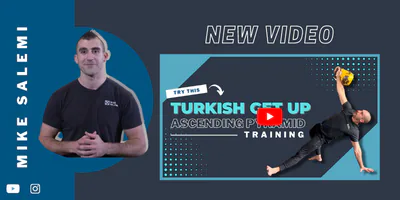

B708 · A great way to train the Turkish Get Up
Hi {first_name},
Strength without control isn’t useful or athletic. Enter the Turkish Get Up (TGU). Everything about this exercise is about strength under control.
In today’s video I show an ascending pyramid format to progress the TGU.
I feel great after doing this exercise. My shoulders and posture feel on point and I notice it in how I carry myself.
Every exercise is an assessment. The TGU covers so many planes and patterns of movement, that you get an amazing look at stability, strength, and mobility on both sides of the body.
One last thought, the TGU is a great prerequisite for advanced overhead lifts. You have to keep your elbow locked out at all times with the TGU which is essential for overhead lifts.
Watch the video and carve out some time for training the Get Up this week!
 Keep training intentionally, Mike Salemi |